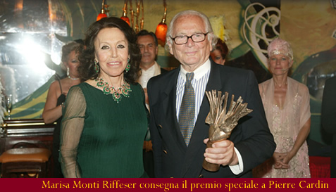

L' AUTORE DELLA SCULTURA
Novello Finotti nasce a Verona
nel 1939. Frequenta l’Accademia Cignaroli. Inizia
ad esporre nel 1958 con un premio acquisto alla
Mostra di Arte Sacra di Assisi. Nel 1964 espone
a New York con una personale alla Armony Gallery.
Nel 1966 partecipa su invito, con un gruppo di
opere alla XXXIII Biennale Internazionale d’Arte
di Venezia. Nel 1972 espone con una personale
alla galleria Jolas di Milano.
Nello stesso anno partecipa alla mostra itinerante
Scultori Italiani di Oggi, curata dal professor
Fortunato Bellonzi di Roma, esponendo a Buenos
Aires, Montevideo, Rio de Janeiro, San Paolo del
Brasile, Tokio, Osaka, Hong Kong, Berlino Est
e Lugano.
Nel 1976 viene invitato alla Quadriennale Nazionale
d’Arte di Roma, ad una mostra itinerante ”il Bronzetto
Italiano”, in Finlandia, Danimarca e Norvegia.
Nel 1977 è a New York con una personale lla Jolas
Jackson Gallery.
Nel 1984 viene invitato con una sala alla XLI
Biennale Internazionale d’Arte di Venezia. Nel
1986 espone con una mostra antologica a palazzo
Te di Mantova. Nel 1988-89 partecipa in Giappone,
con un gruppo di opere in marmo, alla grande mostra
itinerante “ La Scultura Italiana del XX Secolo”
( The Museum of Fine Arts di Gifu, Art Museum
di Niigata City, The Fukuyama Museum of Art).
Nel 1990 realizza un monumento del poeta Biagio
Marin a Grado. Nel 1995 una personale nella Galleria
del Credito Valtellinese, Refettorio delle Stelline
a Milano.
Tra il 1998 e il 2001 oltre alla personale alla
Nardin Gallery di New York, esegue i lavori su
committenza, tra cui l’intervento completo della
facciata della Basilica padovana di S.Giustina,
comprendente i tre portali in bronzo, 18 ritratti
dei committenti virtuali inseriti nel retro della
porta centrale, e i quattro simboli degli Evangelisti
in marmo e collocati nelle nicchie della facciata.
Nel 2001 esegue il decoro in bronzo dorato per
l’altare del Beato Giovanni XXIII, per la Basilica
di S.Pietro a Roma. Nel 2002 realizza una grande
figura in marmo bianco di Carrara, rappresentante
S.Maria Soledad, collocata in una nicchia esterna
della Basilica di S.Pietro in Vaticano.
Dal 2002 al 2005 le mostre personali di Malcesine
(VR), Galleria Forni Milano, Sant’Anna di Stazzema
(LU), Abbazia di Rosazzo, Manzano (UD). Vive e
lavora a Sommacampagna (VR) e a Pietrasanta (LU).

|